Madrid je jedan od najvećih centara španske književnosti. U ovom gradu rođeni su neki od najboljih pisaca španskog Zlatnog veka, kao što su Lope de Vega , reformator španskog pozorišta. Njegov rad je nastavio Kalderon de la Barka.
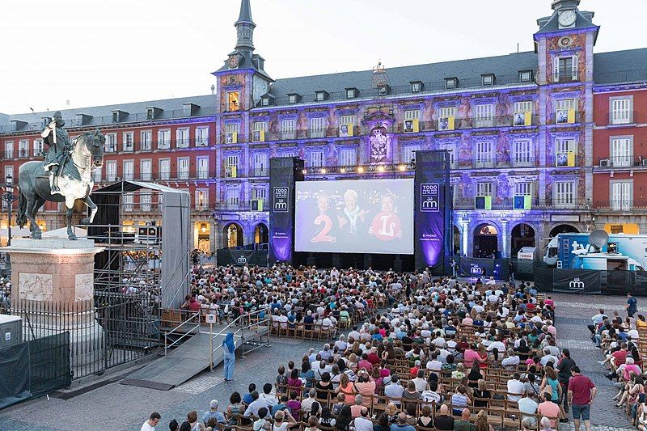Madrid je poznat po velikom broju muzeja, među kojima se najviše ističu muzeji umetnosti. U ulici Paseo del Prado nalaze se tri ovakva muzeja od svetskog značaja, zbog čega je ovaj kraj poznat i kao zlatni trougao umetnosti. To su Muzej Prado, Nacionalni muzej i umetnički centar Kraljica Sofija i Muzej umetnosti Tisen-Bornemica.
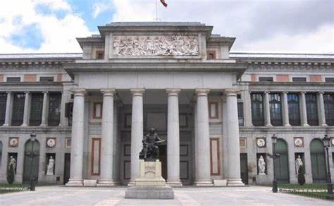 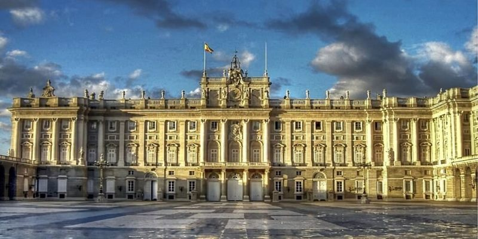Arhitekturu u Madridu čine razni arhitektonski stilovi koji su se, tokom duge istorije Španije, smenjivali.
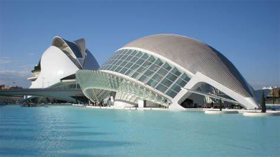 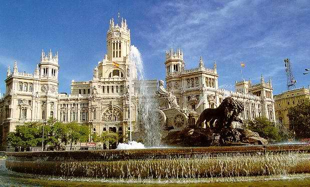 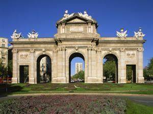Iz perioda renesanse takođe nema puno građevina ali najreprezentativniji su Most Segovije i Manastir bosonogih kraljeva .
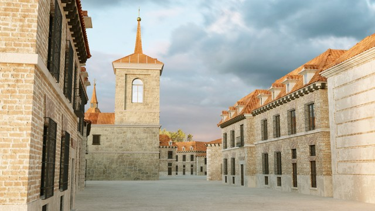 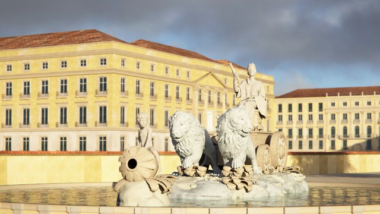Šetalište statua predstavlja deo parka ukrašen nekim od statua kraljeva iz „Kraljevskog dvora”, izvajanih između 1750. i 1753. godine.
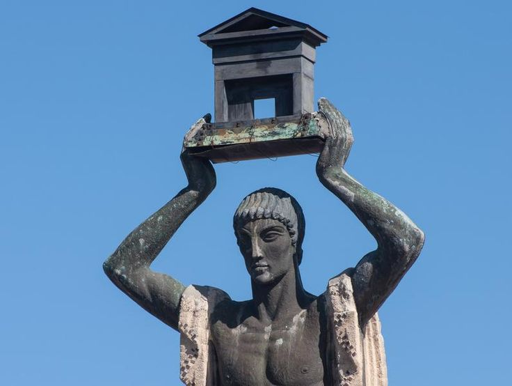 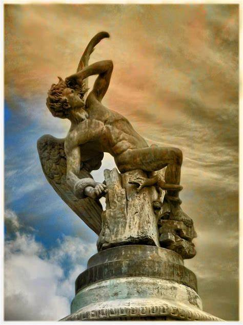Madrid je univerzitetski grad. U njemu se nalaze Univerzitet Komplutense, Madrid (UCM) koji je 1508. otvoren u predgrađu Alkale de Enares, a od 1836. je premešten u Madrid, Univerzitet Komiljas (1982), Politehnički Univerzitet (UPM, 1971). Nezavisni univerzitet (UAM, 1968), Univerzitet Karlos III (UC3M, 1989) i Univerzitet Kralj Huan Karlos (1996). Ovde se nalaze Kraljevska španska akademija, Akademija umetnosti, prirodnih i društvenih nauka.
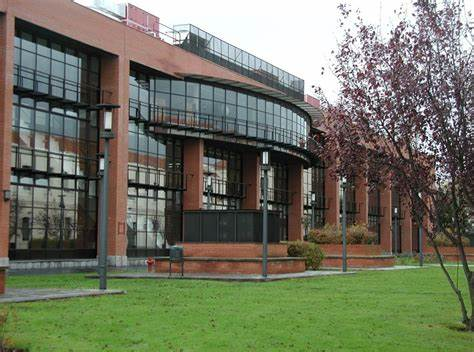 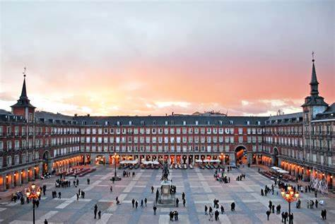